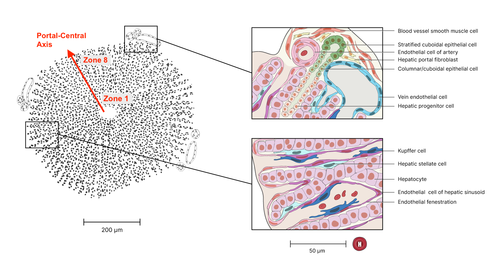
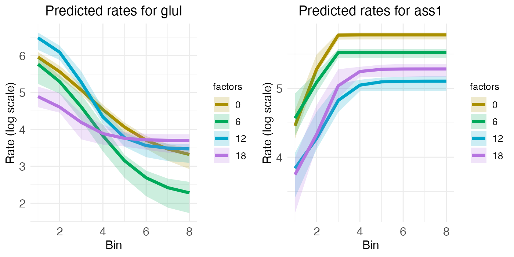
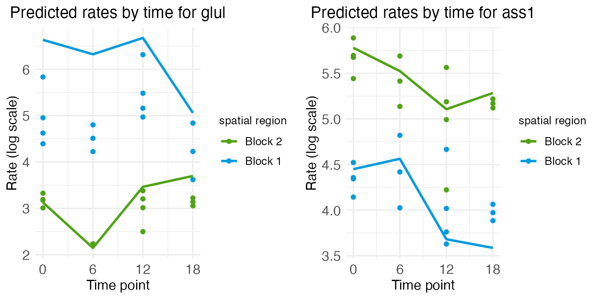
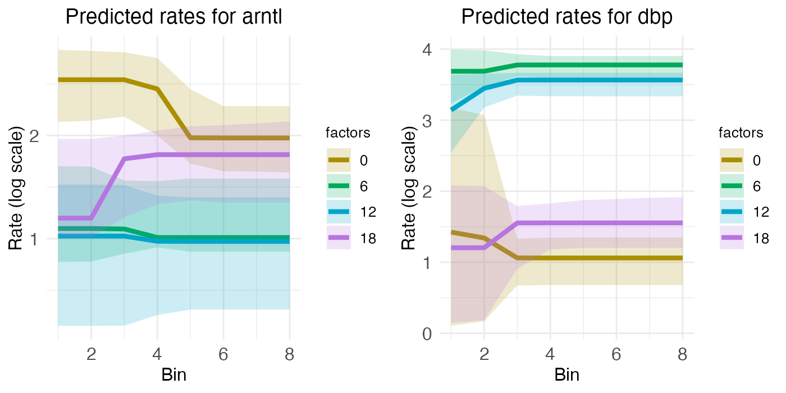
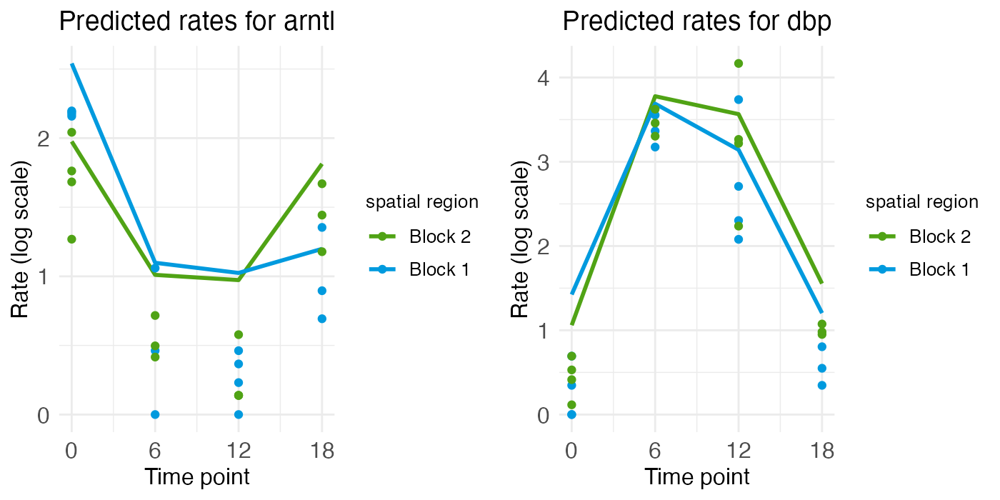
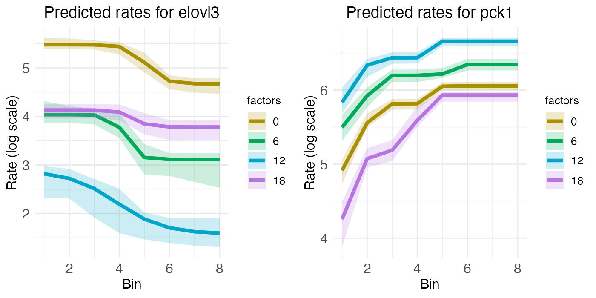
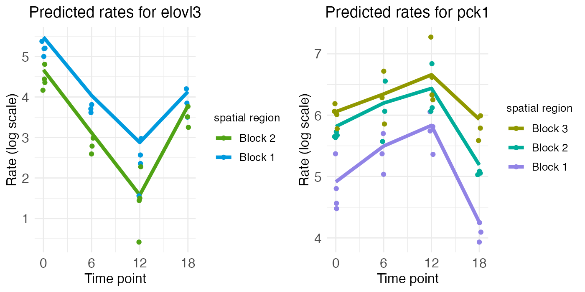

Radial zonation in liver lobules
Michael Barkasi
2026-03-23
tutorial_liverradial.RmdIntroduction
Mammalian liver tissue is organized into concentric rings of cells called lobules. These lobules are filled with capillaries which carry blood to an interior central vein. The rings, or zones, of the lobules are functionally distinct. As Droin et al. (2021) explain, this functional zonation “is accompanied by gradients of gene expression along the portal-central axis, with some genes expressed more strongly near the central vein, and vice versa for portally expressed genes” (p. 43). In addition, “liver physiology is also highly temporally dynamic”, with rhythmic cycles driven by “the complex interplay among the endogenous circadian liver oscillator, rhythmic systemic signals and feeding-fasting cycles” (ibid).

Liver-lobule organization. Red annotation added. Original figure from the Human Reference Atlas. (12/18/2024). Liver Lobule. NIAID NIH BIOART (CC BY 4.0).
for P_1(x) and P_2(x) the first- and second-degree Legendre polynomials. Statistical testing showing significant coefficients \mu_1 or \mu_2 (terms of pure spatial variation) and a_0 or b_0 (terms of pure temporal variation) would indicate additive spatial zonation and temporal rhythm, while significant coefficients a_1, a_2, b_1, or b_2 (terms for position-dependent temporal variation) would indicate interacting spatial and temporal effects. These model coefficients are, of course, log2 fold changes (L2FC).
Whether or not interaction is required for a FSE, or if instead the combination of additive zonation and temporal rhythm suffices, is a conceptual question we can set aside here. What’s important is that this model allowed Droin et al. to test for FSEs by first:
- testing for significant model coefficients, then
- searching for KEGG pathways enriched with genes having these significant model coefficients.
They found enriched KEGG pathways for many of their additive genes. Depending on one’s perspective, this finding is either evidence that temporal rhythm has a FSE, or (if interaction is necessary) evidence that temporal rhythm has no FSE. Either way, their model afforded a principled test for FSEs.
This same analysis can be run with a wisp. Wisp models are, of course, built explicitly for modeling effects on one-dimensional spatial variation, including temporal effects from a time series. While wisp models represent time as a discrete additive effect rather than as a harmonic oscillation (and thus lack a period term \omega which could be used to test for period length), known or expected oscillations can be represented by indexing times to some repeating point in the series (“zeitgeber time”). In this case, effects of circadian rhythms or feed-fast cycles can be modeled by indexing times to the start of each day. (Indeed; even Droin et al. exploited this fact by fixing \omega=2\pi/24\mathrm{ hr}, instead of estimating \omega from the data.)
Processing the data
Droin et al. have made some of their data available in an easily accessible form in a GitHub repo. The data consists of ten MatLab (.mat) files, one for each mouse used in the study. Transcriptome sequencing was performed on each mouse at one of four zeitgeber time points (ZT): 0 hr, 6 hr, 12 hr, and 18 hr. The ZT for each sample is included in the file name. This particular data set was actually generated via bulk sequencing, not with spatial transcriptomics. However, using previously validated marker genes, Droin et al. assigned to each cell a probability of zone membership, for each zone along a discrete one-dimensional axis of eight liver portal-central zones (the Pmat matrix). These probabilities were then multiplied by normalized count values for each gene in each cell (the mat.norm matrix) and log-transformed using the transform shown above.
It would not be a good idea to reconstruct this data and give it to the wisp function directly. Wisp is intended to model raw counts from Poisson processes, meaning positive integers without weighting or normalization. The concern raised by weighting and normalization is that wisp parameters are fit by maximizing the likelihood of the data, under the assumption that the data comes from a gamma-distributed Poisson process. Data may no longer fit this distribution after it has been weighted or normalized.
Hence, instead of reconstructing the Droin et al. data directly, we will use it to simulate raw counts suitable for wisp modeling. For each cell with normalized pseudo-count y and probabilities p_1,\ldots,p_8 of membership in zones 1 to 8, counts will be drawn from a Poisson distribution, for i=1,\ldots,8: y_i\sim \mathrm{Pois}(y\times 1\mathrm{e}3) The multiplication by 1\mathrm{e}3 is to denormalize the pseudo-count to a realistic expression rate. Next, draws are made from a binomial distribution b_i\sim \mathrm{Binom}(1, p_i) Finally, for each zone i, a cell is added to the data with count y_ib_i.
For the actual execution, we first load the MatLab files:
library(R.matlab)
files <- list.files(
path = "Droin_data",
pattern = "\\.mat$",
full.names = TRUE
)
Droin_data <- lapply(files, readMat)
names(Droin_data) <- basename(files)Droin et al. bulk-sequenced thousands of genes. For this demonstration, we will model just a few with known zonation and temporal rhythm:
| Abbreviation | Name | Zonation | Rhythm |
|---|---|---|---|
| GLUL | Glutamine synthethase | Central | |
| ASS1 | Urea cycle gene argininosuccinate synthetase | Portal | |
| ARNTL, BMAL1 | Basic helix-loop-helix ARNT like 1 | Circadian | |
| DBP | PAR bZip transcription factor | Circadian | |
| ELOVL3 | ELOVL fatty acid elongase 3 | Central | Circadian |
| PCK1 | Phosphoenolpyruvate carboxykinase 1 | Portal | Circadian |
We can subset the data as follows:
# List of genes to keep
genes_to_keep <- c("glul", "ass1", "arntl", "dbp", "elovl3", "pck1")
# For each loaded MatLab file, subset to the above genes
for (fn in basename(files)) {
# Check that the desired genes are in the file
gene_idx <- which(unlist(Droin_data[[fn]][["all.genes"]]) %in% genes_to_keep)
genes_to_keep <- unlist(Droin_data[[fn]][["all.genes"]])[gene_idx]
# Subset file components to just these genes
Droin_data[[fn]][["seq.data"]] <- Droin_data[[fn]][["seq.data"]][gene_idx,]
Droin_data[[fn]][["mat.norm"]] <- Droin_data[[fn]][["mat.norm"]][gene_idx,]
Droin_data[[fn]][["MeanGeneExp"]] <- Droin_data[[fn]][["MeanGeneExp"]][gene_idx,]
Droin_data[[fn]][["SE"]] <- Droin_data[[fn]][["SE"]][gene_idx,]
Droin_data[[fn]][["q.vals"]] <- Droin_data[[fn]][["q.vals"]][gene_idx,]
# Rename data rows with gene names
rownames(Droin_data[[fn]][["seq.data"]]) <- genes_to_keep
rownames(Droin_data[[fn]][["mat.norm"]]) <- genes_to_keep
rownames(Droin_data[[fn]][["MeanGeneExp"]]) <- genes_to_keep
rownames(Droin_data[[fn]][["SE"]]) <- genes_to_keep
names(Droin_data[[fn]][["q.vals"]]) <- genes_to_keep
Droin_data[[fn]][["all.genes"]] <- genes_to_keep
}Finally, we can build a data frame of simulated counts suitable for the wisp function. As described in more detail in the tutorial on modeling the laminar cortical axis, wisp expects a data frame with the same structure used by well-known R functions for linear modeling, such as lme4::lmer or stats::lm. Each row should be a cell, with columns for the count (count), spatial coordinate (bin), RNA species (gene), random variable (mouse), and any fixed-effects (in this case, ZT).
# Create count_data frame for use with wisp()
count_data <- data.frame()
# For each subsetted MatLab file ...
for (i in seq_along(Droin_data)) {
# Grab gene list and data dimensions
gene_list <- rownames(Droin_data[[i]][["mat.norm"]])
n_genes <- length(gene_list)
n_cells <- ncol(Droin_data[[i]][["mat.norm"]])
n_bins <- ncol(Droin_data[[i]][["Pmat"]])
# Grab row sums for renormalization of probability to 1
Pmat_row_sums <- rowSums(Droin_data[[i]][["Pmat"]])
# De-normalize transcript counts to realistic rates
denormalized_rates <- Droin_data[[i]][["mat.norm"]] * 1e3
# ... for each gene
for (g in c(1:n_genes)) {
# ... for each zone (i.e., spatial coordinate, or bin)
for (b in c(1:n_bins)) {
# Simulate count of gene g in each cell, for mouse i
sim_gene_counts_by_cell <- rpois(n_cells, denormalized_rates[g,])
# Get probability of bin membership for each cell, for mouse i
probability_of_zone_membership_by_cell <- Droin_data[[i]][["Pmat"]][,b] / Pmat_row_sums
# Randomly select whether each cell is in this bin
cell_weight <- rbinom(n = n_cells, size = 1, prob = probability_of_zone_membership_by_cell)
count_data <- rbind(
count_data,
data.frame(
# add mouse number
mouse = rep(i, n_cells),
# extract ZT from file name and add
ZT = rep(as.numeric(gsub("\\D", "", names(Droin_data)[i])), n_cells),
# add bin number
bin = rep(b, n_cells),
# add gene name
gene = rep(gene_list[g], n_cells),
# compute and log-transform the zone-weighted normalized gene counts
count = sim_gene_counts_by_cell * cell_weight
)
)
# Note: to reconstruct the Droin et al. data, use:
# count = transform_data(Droin_data[[i]][["mat.norm"]][g,] * Droin_data[[i]][["Pmat"]][,b])
# with the function:
# transform_data <- function(x) {
# log2(x + 1e-4) - log2(11e-5)
# }
}
}
}Fitting a wisp
For the purpose of this tutorial, the above preprocessing code is not run. Instead, the simulated data is saved to a CSV file available with this package. We will load it directly.
count_data <- read.csv(
system.file(
"extdata",
"Droin_radial_count_data_sim.csv",
package = "wispack"
)
)The first step is to set the variables to be modelled:
data.variables <- list(
count = "count",
bin = "bin",
context = "liver",
species = "gene",
ran = "mouse",
timeseries = "ZT"
)There are only eight coordinates in the spatial dimension (bins 1 to 8). Ideally we would have more, but we can compensate by adjusting the model settings. Potentially needed adjustments include lowering buffer_factor (which controls minimum distance between rate-transition points), LROwindow_factor (which controls the range of rate-transition slopes detected when searching for rate-transition points), and LROcutoff (which controls the sensitivity of rate-transition point detection). Previous testing (not shown here) suggests that all that’s necessary is lowering the LROcutoff from the default 2.0 to 1.5.
model.settings <- list(
LROcutoff = 1.5
)Next, we need to adjust a few of the plot settings. First, we want to print plots selectively at the end, so print.plots is set to FALSE. Second, count_size and count_jitter are adjusted to account for the low number of spatial coordinates. Finally, we adjust the alpha (transparency) values to focus on the fixed-effect predictions rather than the random-effect predictions.
plot.settings <- list(
print.plots = FALSE,
title_size = 14,
log.scale = TRUE,
count_size = 2.5,
count_jitter = 0.0,
count.alpha.none = 0.8,
count.alpha.ran = 0.5,
pred.alpha.ran = 0.0
)Finally, we can fit the model. For the purpose of estimating the parameters, we will use bootstraps instead of MCMC sampling. So, we set the number of MCMC steps to zero and the number of bootstraps to 1000.
# Load wispack
library(wispack, quietly = TRUE)
# Set random seed for reproducibility
ran.seed <- 123
set.seed(ran.seed)
# Fit model
radial.model <- wisp(
count.data = count_data,
variables = data.variables,
bootstraps.num = 1e3,
max.fork = 10,
model.settings = model.settings,
MCMC.settings = list(MCMC.steps = 0),
plot.settings = plot.settings
)##
##
## Parsing data and settings for wisp model
## ----------------------------------------
##
## Model settings:
## buffer_factor: 0.05
## ctol: 1e-06
## max_penalty_at_distance_factor: 0.01
## LROcutoff: 1.5
## LROwindow_factor: 1.25
## rise_threshold_factor: 0.8
## max_evals: 1000
## rng_seed: 42
## warp_precision: 1e-07
## round_none: TRUE
## trtKO: none
## inf_warp: 450359962.73705
##
## Plot settings:
## print.plots: FALSE
## dim.bounds:
## log.scale: TRUE
## splitting_factor:
## CI_style: TRUE
## label_size: 5.5
## title_size: 14
## axis_size: 12
## legend_size: 10
## count_size: 2.5
## count_jitter: 0
## count.alpha.ran: 0.5
## count.alpha.none: 0.8
## pred.alpha.ran: 0
## pred.alpha.none: 1
##
## MCMC settings:
## MCMC.burnin: 100
## MCMC.steps: 0
## MCMC.step.size: 0.5
## MCMC.prior: 1
## MCMC.neighbor.filter: 1
##
## Variable dictionary:
## count: count
## bin: bin
## context: liver
## species: gene
## ran: mouse
## timeseries: ZT
## fixedeffects: ZT
##
## Parsed data (head only):
## ------------------------------
## count bin context species ran timeseries
## 1 0 1 liver arntl 1 0
## 2 0 1 liver arntl 1 0
## 3 0 1 liver arntl 1 0
## 4 0 1 liver arntl 1 0
## 5 0 1 liver arntl 1 0
## 6 0 1 liver arntl 1 0
## ----
##
## Initializing Cpp (wspc) model
## ----------------------------------------
##
## Infinity handling:
## machine epsilon: (eps_): 2.22045e-16
## pseudo-infinity (inf_): 1e+100
## warp_precision: 1e-07
## implied pseudo-infinity for unbounded warp (inf_warp): 4.5036e+08
##
## Extracting variables and data information:
## Found max bin: 8.000000
## Fixed effects:
## "timeseries"
## Ref levels:
## "0"
## Time series detected:
## "0" "6" "12" "18"
## Created treatment levels:
## "ref" "6" "12" "18"
## Constructed weight_row matrix
## Context grouping levels:
## "liver"
## Species grouping levels:
## "arntl" "ass1" "dbp" "elovl3" "glul" "pck1"
## Random-effect grouping levels:
## "none" "1" "10" "2" "3" "4" "5" "6" "7" "8" "9"
## Total rows in summed count data table: 2112
## Number of rows with unique model components: 264
##
## Creating summed-count data columns and weight matrix:
## Random level 0, 1/11 complete
## Random level 1, 2/11 complete
## Random level 2, 3/11 complete
## Random level 3, 4/11 complete
## Random level 4, 5/11 complete
## Random level 5, 6/11 complete
## Random level 6, 7/11 complete
## Random level 7, 8/11 complete
## Random level 8, 9/11 complete
## Random level 9, 10/11 complete
## Random level 10, 11/11 complete
##
## Making extrapolation pool:
## row: 38/192
## row: 76/192
## row: 114/192
## row: 152/192
## row: 190/192
##
## Making initial parameter estimates:
## Extrapolated 'none' rows
## Took log of observed counts
## Estimated gamma dispersion of raw counts
## Estimated change points
## Found average log counts for each context-species combination
## Estimated initial parameters for fixed-effect treatments
## Built initial beta (ref and fixed-effects) matrices
## Initialized random-effect warping factors
## Made and mapped parameter vector
## Number of parameters: 324
## Constructed grouping variable IDs
## Size of boundary vector: 1848
##
## Estimating model parameters
## ----------------------------------------
##
## Running bootstrap fits
## Checking feasibility of provided parameters
## ... no tpoints below buffer
## ... no NAN rates predicted
## ... no negative rates predicted
## Provided parameters are feasible
## Initial boundary distance (want > 0): 0.206765
## Performing initial fit of full data
## Penalized neg_loglik: 1044.51
## Batch: 1/100, 0.162773 sec/bs
## Batch: 10/100, 0.158804 sec/bs
## Batch: 20/100, 0.15897 sec/bs
## Batch: 30/100, 0.150676 sec/bs
## Batch: 40/100, 0.156892 sec/bs
## Batch: 50/100, 0.166217 sec/bs
## Batch: 60/100, 0.157727 sec/bs
## Batch: 70/100, 0.158966 sec/bs
## Batch: 80/100, 0.177346 sec/bs
## Batch: 90/100, 0.149993 sec/bs
## All complete!
##
## Bootstrap simulation complete...
## Bootstrap run time (total), minutes: 2.709
## Bootstrap run time (per sample), seconds: 0.163
## Bootstrap run time (per sample, per thread), seconds: 1.625
##
## Setting full-data fit as parameters...
## Checking feasibility of provided parameters
## ... no tpoints below buffer
## ... no NAN rates predicted
## ... no negative rates predicted
## Provided parameters are feasible
## Initial boundary distance (want > 0): 0.378776
##
## Running stats on simulation results
## ----------------------------------------
##
## Grabbing sample results, only resamples with converged fit...
## Grabbing parameter values...
## Computing 95% confidence intervals...
## Estimating p-values from resampled parameters...
##
## Recommended resample size for alpha = 0.05, 108 tests
## with bootstrapping/MCMC: 2160
## Actual resample size: 1001
##
## Stat summary (head only):
## ------------------------------
## parameter estimate CI.low CI.high p.value p.value.adj alpha.adj significance
## 1 baseline_liver_Rt_arntl_Tns/Blk1 2.52351157 2.147938 2.8419666 NA NA NA
## 2 beta_Rt_liver_arntl_6_X_Tns/Blk1 -1.42987696 -2.578113 3.1579983 0.004995005 0.33466533 0.0007462687 ns
## 3 beta_Rt_liver_arntl_12_X_Tns/Blk1 -0.03715176 -1.591022 0.8591341 0.911088911 3.64435564 0.0125000000 ns
## 4 beta_Rt_liver_arntl_18_X_Tns/Blk1 0.13107595 -0.664336 1.8067587 0.742257742 6.68031968 0.0055555556 ns
## 5 baseline_liver_Rt_arntl_Tns/Blk2 1.96922136 1.593244 2.2705854 NA NA NA
## 6 beta_Rt_liver_arntl_6_X_Tns/Blk2 -0.95957998 -1.478458 0.6556153 0.000999001 0.07592408 0.0006578947 ns
## ----
##
## Computing 95% CI for predicated values by bin
## ----------------------------------------
##
## Grabbing sample results, only resamples with converged fit...
## Computing predicted values for each sampled parameter set...
## Computing 95% CIs...
##
## Analyzing residuals
## ----------------------------------------
##
## Computing residuals...
## Making masks...
## Making plots and saving stats...
##
## Log-residual summary by grouping variables (head only):
## ------------------------------
## group mean sd variance
## 1 all 0.3761585 0.4347535 0.1890106
## 2 ran_lvl_none 0.3469852 0.3374680 0.1138847
## 3 ran_lvl_1 0.4181383 0.4768411 0.2273775
## 4 ran_lvl_10 0.4131620 0.5134598 0.2636409
## 5 ran_lvl_2 0.3451371 0.4303134 0.1851696
## 6 ran_lvl_3 0.4122882 0.5838509 0.3408819
## ----
##
## Making effect parameter distribution plots...
## Making rate-count plots...
## Making time series plots...
## Making parameter plots...
## Making parameter plots...
## Making parameter plots...
## Making parameter plots...
## Making parameter plots...
## Making parameter plots...Examining results
The wisp function produces both a rate-count plot with space along the x-axis and a time-series plot with time along the x-axis. By examining the plots of the the model fit for each gene, we can assess how well wisp has captured zonation and temporal rhythm. The below plots align with the expectations in the above table, and are a near match for the plots produced by the bespoke model of Droin et al. (2021) and shown in figure 1. (However, note that the colors used in the plots here differ from those used in the paper figure.)
Zonated genes
To begin, consider GLUL and ASS1, which are expected to be primarily zonated, with GLUL being higher in the central region and ASS1 being higher in the portal region. Their respective spatial gradients are easy to see in the rate-count plot:
plt_glul <- radial.model[["plots"]][["ratecount"]][["plot_pred.log_context_liver_fixEff_glul"]]
plt_ass1 <- radial.model[["plots"]][["ratecount"]][["plot_pred.log_context_liver_fixEff_ass1"]]
g <- arrangeGrob(plt_glul, plt_ass1, ncol = 2)
grid.draw(g)
While the rate-count plots make clear the spatial gradients of GLUL and ASS1, temporal information can only be read off implicitly. For ASS1, we seem to see a slight decrease in gene expression over the day, from ZT0 to ZT18. For GLUL, expression seems constant across the day, except perhaps for some minor interaction between zone and time that has the central region decreasing in expression as the portal region increases. These temporal patterns can be seen more clearly by looking at the time-series plots.
plt_glul <- radial.model[["plots"]][["timeseries"]][["plot_pred.log_context_liver_timeseries_glul"]]
plt_ass1 <- radial.model[["plots"]][["timeseries"]][["plot_pred.log_context_liver_timeseries_ass1"]]
g <- arrangeGrob(plt_glul, plt_ass1, ncol = 2)
grid.draw(g)
The time-series plot for ASS1 shows some variation over time, but the magnitude of that variation is small compared to the difference in expression level between the blocks (i.e., over space). The same holds true for GLUL, although again we see the more portal region (block 2) seeming to increase in expression while the more central region (block 1) decreases.
Rhythmic genes
For the two rhythmic genes, the spatial rate-count plots show two times with relatively low and flat expression, along with two times with relatively high expression, although the central region of ARNTL shows a bit of a spatial gradient. For the portal region of ARNTL, ZT0 and ZT18 are elevated (yellow and purple), while for DBP it’s ZT6 and ZT12 (green and blue) that are elevated.
plt_arntl <- radial.model[["plots"]][["ratecount"]][["plot_pred.log_context_liver_fixEff_arntl"]]
plt_dbp <- radial.model[["plots"]][["ratecount"]][["plot_pred.log_context_liver_fixEff_dbp"]]
g <- arrangeGrob(plt_arntl, plt_dbp, ncol = 2)
grid.draw(g)
These temporal dynamics are made more clear in the time-series plots, which clearly show the mid-ZT dip in ARNTL and the mid-ZT bump in DBP.
plt_arntl <- radial.model[["plots"]][["timeseries"]][["plot_pred.log_context_liver_timeseries_arntl"]]
plt_dbp <- radial.model[["plots"]][["timeseries"]][["plot_pred.log_context_liver_timeseries_dbp"]]
g <- arrangeGrob(plt_arntl, plt_dbp, ncol = 2)
grid.draw(g)
Zonated and rhythmic genes
Finally, we have ELOVL3 and PCK1, two genes with both spatial zonation and temporal rhythm. Spatially, ELOVL3 has the same profile as GLUL. Both are expressed more in the central region. PCK1, on the other hand, is expressed more in the portal region, just like ASS1.
plt_elovl3 <- radial.model[["plots"]][["ratecount"]][["plot_pred.log_context_liver_fixEff_elovl3"]]
plt_pck1 <- radial.model[["plots"]][["ratecount"]][["plot_pred.log_context_liver_fixEff_pck1"]]
g <- arrangeGrob(plt_elovl3, plt_pck1, ncol = 2)
grid.draw(g)
However, unlike GLUL and PCK1, ELOVL3 and PCK1 have notable temporal rhythm. ELOVL3 is similar to ARNTL, with a mid-ZT dip. PCK1 is similar to DBP, with a mid-ZT bump.
plt_elovl3 <- radial.model[["plots"]][["timeseries"]][["plot_pred.log_context_liver_timeseries_elovl3"]]
plt_pck1 <- radial.model[["plots"]][["timeseries"]][["plot_pred.log_context_liver_timeseries_pck1"]]
g <- arrangeGrob(plt_elovl3, plt_pck1, ncol = 2)
grid.draw(g)
Advantages of wisp
The advantage of using a wisp is that it eliminates the need to build a bespoke model, both in the first place and for extending the analysis. The approach of Droin et al. depends on the assumption that liver zonation is well-modeled by second-degree polynomials and that temporal effects on this zonation are rhythmic. If we want to extend this analysis to test for other potential FSEs besides temporal rhythm, such as gene mutation, drug treatment, or disease state, we would need to build new models for each of these effects. Wisp, on the other hand, can model other fixed-effects directly, without needing to change the model structure. In addition, wisp is not limited to the assumption that the random effect is linear.